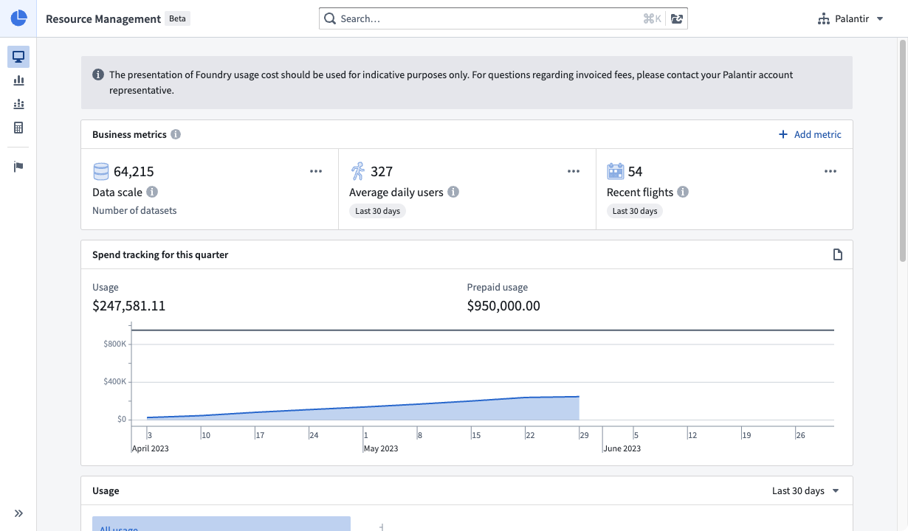
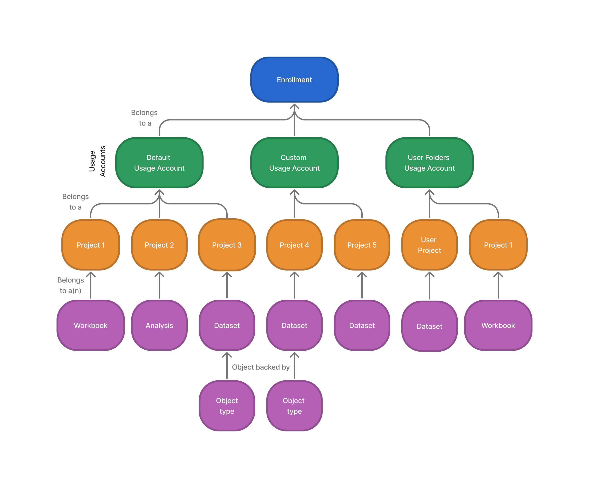

Resource Management helps users understand the following:

The application targets two primary workflows:
Users can monitor and analyze resource usage using visibility tooling in Resource Management.
In Foundry, all items that can consume discretionary resources are created in a Project. Resource usage for each of these items is accrued to its parent Project. In turn, Projects belong to a usage account.
Usage accounts are a way of grouping related Projects into semantically meaningful groups for better analysis and usage monitoring. By default, enrollments have two usage accounts:
Administrators are free to create new usage accounts and triage Projects in any way that helps them reason about resource consumption. For example, it may be helpful to categorize Projects in terms of department, business unit, or Organization. The usage account of a Project is specified at Project creation time but can always be changed later by an administrator.
Foundry usage is accrued in different ways depending on the workload or application. For example, running a data transformation incurs a compute cost (the cost of servers doing a distributed computation) and a storage cost (the long-term storage cost for the resulting data).
